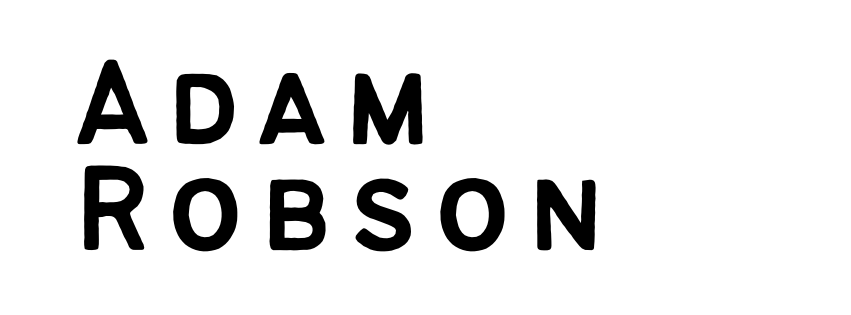

Data
Modeling, transforming, and moving data between the systems a business depends on, with an eye on correctness and repeatability.
T-SQL, Power Query (M), Power BI, Yardi Voyager, SharePoint Lists

I build the systems that underpin organizations: data pipelines, automations, and the software that connects them.
Currently I am a Data Analyst at an organization that is an affordable-housing property management company, where my work spans data engineering, process automation, and Microsoft 365 and Azure administration.
Modeling, transforming, and moving data between the systems a business depends on, with an eye on correctness and repeatability.
T-SQL, Power Query (M), Power BI, Yardi Voyager, SharePoint Lists
Replacing manual, error-prone routines with scheduled, logged, auditable processes that other people can trust and maintain.
PowerShell, Power Automate, Azure Functions, Azure Blob Storage, Entra ID
Small, well-separated programs written to SOLID principles, within reason, and shipped as tools other people can use.
TypeScript, Node.js, Python, Bash, YAML and TOML
Systems I designed and built in my current role. Details are kept general out of respect for my employer.
Built the cloud and device migration tooling for a 400-employee move between Microsoft 365 tenants, coordinating ShareGate copy jobs with PowerShell. The migration completed successfully.
PowerShell, ShareGate, Intune, Entra ID
A pipeline that reads HR system data and keeps the Microsoft 365 directory current, publishing a log so HR can see which records need correcting at the source.
Entra ID, Microsoft 365, SharePoint
An Azure Function that backs up the property-management system's database to Blob Storage with daily, weekly, monthly, and yearly retention tiers. It meets a five-year retention requirement and kept the work in-house rather than with an outside vendor.
Azure Functions, SQL Server on Azure, Azure Blob Storage
Transforms an accounting export into regional import files for the property-management system, archives each run for audit, and delivers the files over SFTP without anyone touching them.
Power Query (M), Power BI, Power Automate, Azure Storage SFTP
Splits multi-page HUD-50059 certification packets and extracts structured fields to JSON so each form can be filed and archived automatically.
PDF processing, structured extraction, JSON
Things I build on my own time.
A zero-dependency, configuration-driven reverse proxy for Node.js. Routes and upstreams are declared in JSON, and it runs either from the command line or embedded in an app.
TypeScript, Node.js, published on npm
The home for the music I write. Audio streams from Cloudflare R2, accounts run through Clerk, and the site deploys from GitHub to Vercel.
TypeScript, Cloudflare R2, Clerk, Vercel
I came to engineering from the law, where precision, documentation, and deadlines are not optional. That habit came with me.
Joined in 2023. Data, automation, and Microsoft 365 and Azure engineering.
An intensive 18-month program in JavaScript, APIs, and web development.
If you're hiring, collaborating, or just curious about something here, LinkedIn is the fastest way to reach me.